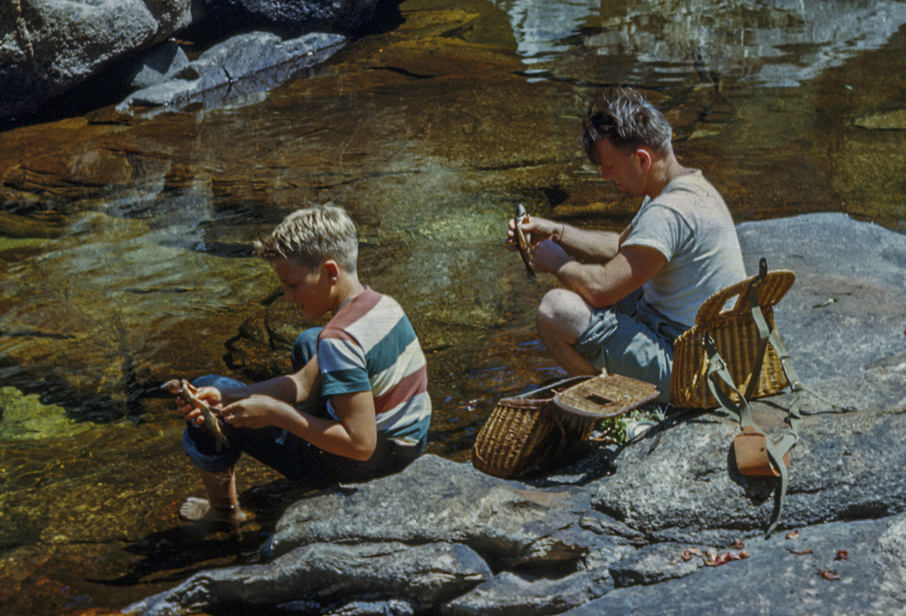

Ray Rasmussen
Edmonton, Alberta, Canada
Moonlit Journey
Dusk. The small trail we’re on curves around a mountain lake. I'm proudly carrying my first fishing pole while following my father through a dense stand of scrub oak, dried leaves crunching underfoot. We're on the way to his favourite spot.
Finally there, I catch minnows with the makeshift wire net dad has crafted. He baits my line and casts into the blue-black stillness. A barely audible “plunk” suggests my minnow has landed far out where I imagine a large trout is waiting to snap it up.
Eagerly I watch the tip of my pole, hoping for a fish to strike, and wait, and wait.
And as the moon rises, we settle into the silence of the night.
illusions –
ripples distort
the moon’s reflection
Today, as I sit on the church pew at his "celebration of life" gathering, I'm musing about our relationship. I remember once saying to a friend, Not more than twenty words passed between us. I cannot recall a single, serious father-son conversation.
That lakeside silence grew into our way of being together, and it became my way of being with others for all too long.
memories –
a screech owl shatters
the night’s silence
Weeks earlier, I had stood beside him, witnessed him strapped into his hospital bed. In his dementia, he ruptured that night's silence with a rant against the doctors and nurses and against his family who allowed this indignity. I wanted to unstrap him and escape, to take him into the outdoors that he loved so much, to a place where he might find some peace.
I wanted to go back in time, return with him to that lakeside evening, gently touch him and whisper, “Speak to your son, speak to him before it is too late.”
Holding his hand that time in the hospital, I said, “Dad, I’m here with you,” and I told him the story of the boy who went fishing with his father. granite stones –
father and son
bent into silence

Author’s Notes:
-
This is a revision of a poem that appeared in Contemporary Haibun Online.
- I'm increasingly adding images to my writing – not to say it's a good thing to do. Just doing it. Comments welcome.
-
William Stafford’s poem “A Certain Bend” about his relationship with his father deeply touched me and influenced my desire to write this piece about my relationship with my father, Vail Rasmussen.
-
Of course, when drawing from someone else’s poetry for a haibun, I use my own context while using the structure of the original poet’s work to structure mine … and thus try to learn how great poets make their poetry.
- Here's a link to my essay on the Role of Modeling in Haibun Composition with other examples of modeling based on other's compositions. I recommend you try it as a way of expanding your writing styles. The issues of plagarism and derivative writing are also addressed in the essay.
William Stafford's poems can be found at the Poetry Foundation website.
William Stafford
A Certain Bend
A certain bend in the road, swayed willows
beyond a fence, and a flat farmyard
waiting—we come around and that instant
freezes: years later I remember.
Why? Why did a lifetime pass, two wars,
a family move and scatter, the country
skid where it is—and only now
that scene return? I put my teacup
down to hold it all steady. Was that
the day I became the person I am?
Father, you should have held my face
in your hands and stared into my eyes. That farmyard
or one like it could be ours, in Kansas, or
Alaska, or anywhere. You would be there
now, I would hold out my hand
for whatever came, and the willows would bend
still in that picture we saw that day.
Bio: William Stafford [1914-1993].
BA and MA from University of Kansas, PhD University of Iowa, conscientious objector, active in pacifist organizations, taught many places, Professor Emeritus of English.
He writes:
"When you make a poem you merely speak or write the language of every day, capturing as many bonuses as possible and economizing on the losses; that is, you come awake to what always goes in in the language, and you use it to the limit of our ability and your power of attention at the moment."
|